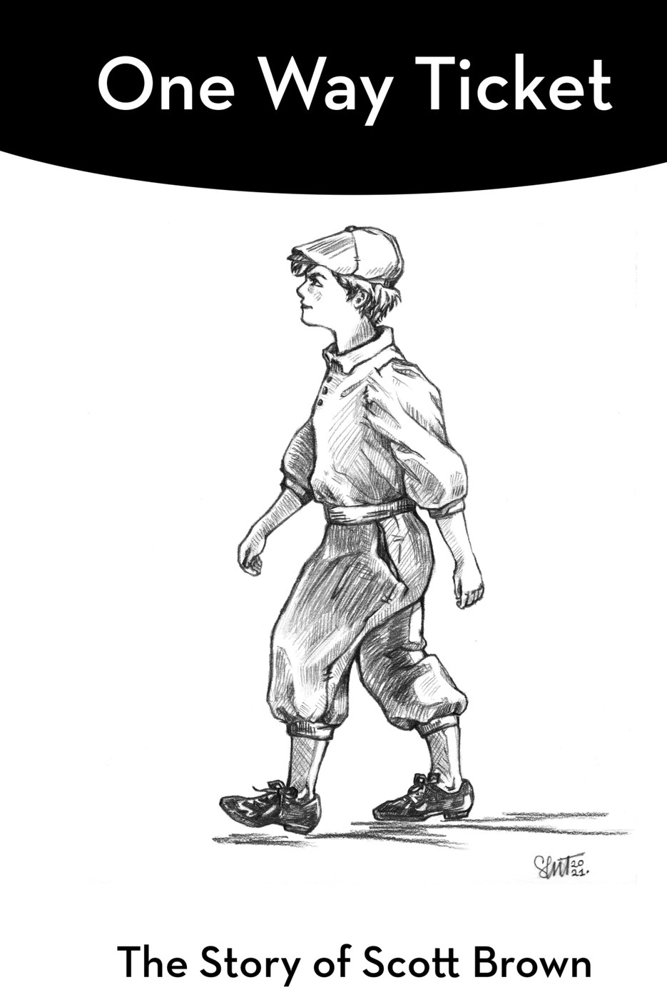

Scott Brown has spent more than 36 years in real estate and was recently named manager of the Pasadena office for Berkshire Hathaway HomeServices California Properties. He joined the company in 2023 to serve as director of the commercial division, agent development and growth. Scott is also the best-selling author of Beyond Mach 3: A Pilot's Journey Through The U-2 and SR-71 (1950 to 1970) A Memoir, a collection of stories written by his father, Col. Buddy Leroy Brown, which he received five years after his father's passing.
Scott also has a second book in the works called One Way Ticket. It details the significant personal tragedies and challenges that he has overcome in his long and noteworthy career.
A graduate of the University of California Santa Barbara, where he earned a degree in physiological psychology, Scott competed as a student-athlete in ice hockey at the collegiate level before a fractured elbow ended his career. We talked about his experience writing his father's book, the childhood that shaped him, a college dormmate who turned out to be one of the most notorious serial killers in New York history, and an agreement with an actor from MASH who sees a mini-series in his story.
So, your dad passed away, and then you received his memoirs five years later?
I edited it, my wife edited it, and we sent it to Best Seller Publishing Group. They edit and read, and then we posted it on July 4 of 2024. We put it out there on Amazon and it went from there.
What a journey to get to know your dad better. That's almost like a story in itself.
There was a lot to this whole memoir, because I never really got to know him when he was alive.
He was busy protecting our country.
I have a second book that I haven't published yet, because we didn't want it to interfere with my dad's book. The book is my own memoir. It's called One Way Ticket. What people don't understand is that sometimes a family, a father's, even a mother's position in the world, can have an effect on a child. It affected me, because I never really knew about him or what he did. So, when he showed up, everything had to be perfect, to the point where it affected me mentally.
In my book, I talk about losing the ability to read, write and spell as a very young child...something just didn't work well with me with the military thing. Eventually they put me away, in a trailer with violent kids, autistic kids, kids with schizophrenia.
Then my mom and dad divorced and we moved off base. They had nowhere to put me, so they had to put me back in public school. The story details how I missed all the years of reading, writing and spelling, and had to learn how to survive as a young child. My mom was still pretty young after they divorced and decided she was going to make up for lost time, so she was never around. I eventually moved into a foster home with my friend whose mom was the foster parent. There were 10 kids, and I went all the way through high school in the foster home, which was great, because I had food, clothing, and people around me.
And then there's how I got into college. I actually played ice hockey in Northern California, where they built a rink in a little cowboy town I was raised in. It was my outlet, and I was lucky enough to get pretty damn good, to get noticed to where I got into a university in upstate New York and played at the NCAA level when most people didn't know there were ice arenas in Northern California.
So, you were a student-athlete. I can only imagine how hard that would be.
I wasn't accepted because of my grades. I was accepted because of hockey, but I eventually proved myself. I figured out how to read, write and spell, and ended up graduating from UC Santa Barbara, because my NCAA career ended when I busted my elbow. I've got a three-inch pin in there now, but it's fine. Took five years to bend my elbow again. I actually taught at the university level in physiological psychology. I taught the labs.
The story shows how someone in my position could have gotten derailed, like my brother, who got into drugs and never graduated from high school. He did become a cement contractor. People seem to find it interesting to see how I went through all these struggles and ended up where I am today.
I can see how it would be very inspiring for people to hear what you've been through.
There was a lot to this book. I never talked about this stuff for over 50 years. My wife knew some of it. As a young child, all I knew was I had a one way ticket. That's the name of the book, One Way Ticket. There was nowhere to go. You either made it or you died. You didn't just survive...I had to learn at a young age that if I'm going to make it, it's up to me.

Here's what's interesting, and maybe I didn't tell you this. When things were falling apart and we were still on base, I was sitting in my room by myself and feeling really down. They had put me back a grade and I couldn't figure out what was going on with my life. I looked up and saw a young boy dressed in 1920s garb, with the hat, the khaki pants. He was about the same age as me. He walked through my room and then vanished. I wasn't afraid. I thought, "Wow, I'm six years old, that's pretty interesting." So, I told my mom I saw an angel. Next thing you know, I'm in with psychologists, psychiatrists. They figured I was crazy. It was time to put me away.
That's terrible.
Through my whole life, I never really talked about it, because when I did, I got put away. I mentioned it once to my wife. You can sit in group settings sometimes where somebody will bring up a topic, like "Have you ever seen an angel or an apparition?" And I'd go, "Yeah, I did." And they listened to me. I can remember every detail of this, which now I call a guardian angel walking through my room. Every detail, even today, as if it happened a minute ago.
I wasn't even going to write my book until people started asking me about it eight years ago. Because I got my father's memoirs, they started saying, "You have stories," and I'd say, "My stories don't mean anything. Everybody struggles. Everybody has a story."
My book is not a long read. I could have gone on for 1,500 pages, but I wanted to keep it simple and easy to read. And I wanted to share my experience with the guardian angel. It plays a part in my book.
A huge part. That was a defining experience, and you were only six years old.
Yes. And that is the image that's on the cover now. I realized that vision had been with me through my whole journey, and I didn't quite know how to explain it. Last year, I finally figured it out. I said they're called whispers. My guardian angel had whispers for me. I always felt like there was something there. I just didn't know how to describe it, because I was not raised on any religion.
For example, when I graduated from high school... I now realize that I was considered mentally challenged, yet here I was graduating from high school. Who was there for it? Not one of my parents. My brother showed up drunk. It was uncomfortable. I realized that when I was going through very significant parts of my life, this guardian angel was there for me. I just didn't realize there was always somebody there, because I didn't understand it. Now throughout my book, there are whispers from my guardian angel that hold meaning to why he was there.
And you sensed him on multiple occasions, not just when you were six.
Yes. My wife's a Roman Catholic. I met her in Milan. She was 19 when I met her and didn't speak English. She understood it when I started telling her about it. What I didn't understand is how it had carried on through my life. As I did the second version of my book, I now understood it, because there were times when people would say, "How did you make it through that?" I'd say, "I don't really know."
Then I realized in the course of writing my book, that I actually do know. There was somebody by my side the whole way. I just didn't understand it.
Nonprofits have asked me to come and speak for children who are aging out of foster care when they turn 18. Some of these parents just throw them out on the street. They become homeless. I've spoken to large church gatherings and things like that, because there is hope for these kids if you give them direction and some kind of training.
Wow, I'm so naïve, I didn't even realize that was a thing. That's terrible.
Yeah. There are some interesting stories in my book. I was in the dorms at Brockport State University in upstate New York. Next door to me was a gentleman by the name of Joel. He was this nerdy dude. He'd come over, and I was kind of like a superstar, because I was this jock from California playing hockey for the university. Celebrity status, right? (laughs) The thing people didn't know is what I went through as a child. Point being, I never labeled anybody.
Joel would come over and we'd talk and play chess...goof around...one time we hitchhiked to the War Memorial in Rochester and watched a Bob Dylan concert. I didn't really know much about him.
Twelve years later, I got a call from an old roommate who said, "Turn on the news." I said, "What?" He said, "I don't want to tell you...just turn on the news." There was Joel Rifkin in handcuffs. He killed 19 women and became a mass murderer. He's in prison now for 205 years. They didn't do the death penalty. If you Google him, you'll see Joel Rifkin. He's done interviews on things like 60 Minutes.
Throughout my personal book are photographs of me playing ice hockey. Those were taken by Joel, because he wanted to be a photographer, so he'd come to the stadium and take pictures of me playing against other universities. What I didn't know was that Joel Rifkin was considered educationally challenged. He had been bullied all his life and his father committed suicide. I didn't know this about him, because I just treated everybody as a human being.
The more I read about Joel, the more I realized we had something in common. We were both educationally challenged children who suffered greatly because of it. The difference is, he was bullied. I didn't get bullied much, and I tell people this: I had snow white hair and was a good-looking kid, and unfortunately, good looks do take you places. People don't bully you as much. He got bullied. People always ask me how I felt when I learned about Joel after the fact. I actually cried. Why? Because I didn't realize we had common childhoods, because I never asked. We didn't talk about it. Do I forgive him for killing 19 women? No, I could never forgive him. Could I have changed him, had I known he was going to turn out that way? Probably not. Do I feel proud of the fact that among all the people he met in his life, that I treated him like a normal human being? Absolutely. And maybe if everybody else had done that through his childhood, he wouldn't have turned out to be a killer.
Gosh. You were both dealing with trauma, major trauma, and he just responded to it in a bad way, didn't have as good of circumstances as you in a way. You also had sports as an outlet.
Yeah, and you'll find this amazing too. There's a gentleman named Jeff Maxwell. He was on the series MASH. He got a hold of both my books and read them, and he texted me and asked if he could talk to me. As it turns out, he's part of a group that produces movies and mini-series, and he said, "I can see the two stories." One is how my dad's job was in a titanium craft doing over 2,300 miles an hour, and mine is how I was trying to figure life out.
Jeff asked me what the purpose was in writing the two books and I said, "My dad's memoir because it helped me psychologically understand who my dad was. My personal one is because I realized it was okay to put it out there, and if it helps other people, great."
In a way, it seems like growth and recruiting and helping other people grow is a natural fit for what you've experienced personally and professionally.
Yeah, my past experiences subconsciously have a huge influence on my leadership role, because the experiences I've had in life come forth in what I do to teach people and communicate with them.
You're obviously willing to be honest and vulnerable, and I would think that makes people relate to you and open up.
Yeah. Sometimes people like me and don't quite understand why, but it's projected in what I do in life, and when I teach and do stuff, they pick up something unconsciously.
So, tell me about the new role. What's ahead?
The goal is to have me focus on the Pasadena office. I'll be managing contracts and answering questions for the agents so they can move forward and get deals done.
You mentioned you're giving a speech this weekend?
Yes, I'm speaking to the Veterans Administration Committee. They want to hear about my dad's book and how it came about. I've got about a 10-minute speech to give them. My dad's book is on Amazon. It's about $19. I get royalties. Amazon makes a lot of money off it. I didn't think about getting rich off this thing, it just felt like a good way to honor my dad. In the last pages of One Way Ticket, there's a paragraph that says I was able to honor my dad by publishing Beyond Mach 3, for his memory. I was able to honor him in the book.
You keep his memory alive, and you have a recording of him that will last forever.
Yeah, exactly.
Beyond Mach 3: A Pilot's Journey Through The U-2 and SR-71 (1950 to 1970) A Memoir by Col. Buddy Brown is available on Amazon. Scott Brown's own memoir, One Way Ticket, is forthcoming.
To support youth transitioning out of foster care, visit A Sense of Home, a Los Angeles-based nonprofit that creates first-ever homes for young adults aging out of the system.